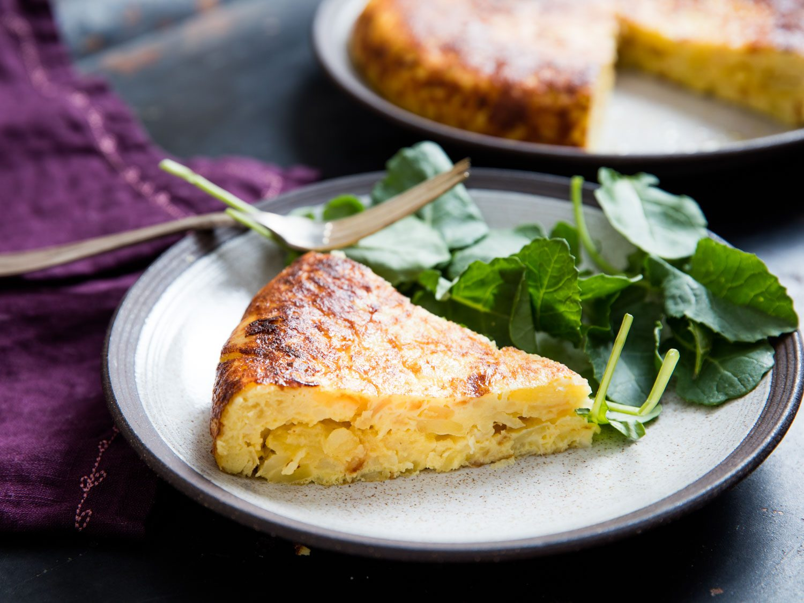

Tortilla de patatas
PAGINADOS
FACEBOOK
Receta de Tortilla de patatas o tortilla española, receta fácil.
La tradicional receta de tortilla de patatas o tortilla española, un plato básico de la cocina española a base de patatas, huevo y cebolla.
Ingredientes (4 personas):
- 6 huevos
- 3 patatas (600 gr)
- 1 cebolla pequeña
- 1 pimiento verde
- 2 vasos de aceite de oliva
- sal
Elaboración:
- Pela y pica la cebolla en dados medianos. Limpia el pimiento verde, retírale el tallo y las pepitas y córtalo en dados.
- Si las patatas estuvieran sucias, pásalas por agua. Pélalas, córtalas por la mitad a lo largo y después corta cada trozo en medias lunas finas de 1/2 centímetros.
- Introduce todo en la sartén, sazona a tu gusto y fríe a fuego suave durante 25-30 minutos.
- Retira la fritada y escúrrela. Pasa el aceite a un recipiente y resérvalo. Limpia la sartén con papel absorbente de cocina.
- Casca los huevos, colócalos en un recipiente grande y bátelos. Sálalos a tu gusto, agrega la fritada de patatas, cebolla y pimiento y mezcla bien.
- Coloca la sartén nuevamente en el fuego, agrega un chorrito del aceite reservado y agrega la mezcla. Remueve un poco con una cuchara de madera y espera (20 segundos) a que empiece a cuajarse.
- Separa los bordes, cubre la sartén con un plato de mayor diámetro que la sartén y dale la vuelta.
- Échala de nuevo para que cuaje por el otro lado.


Titulo